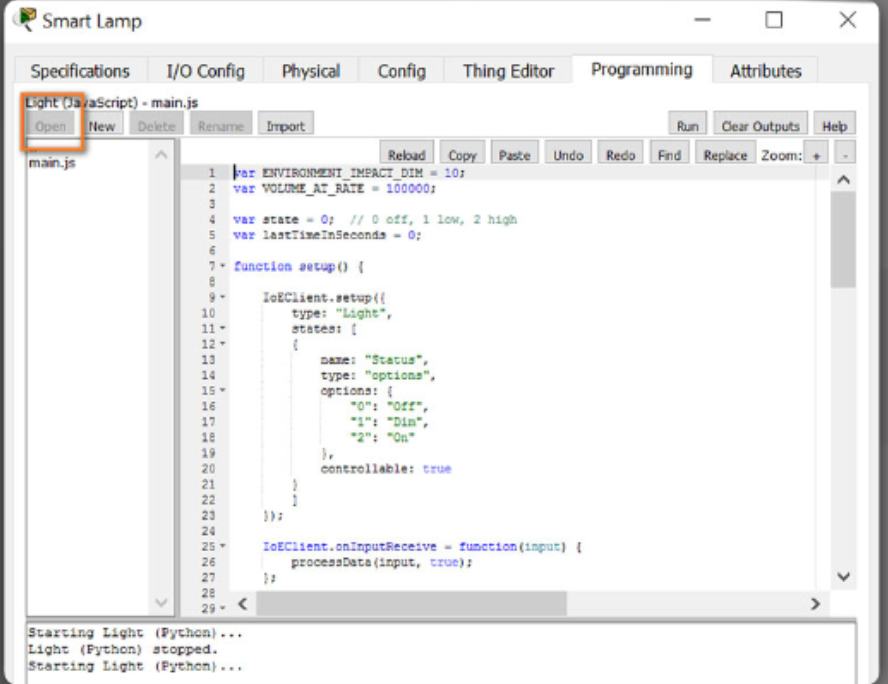
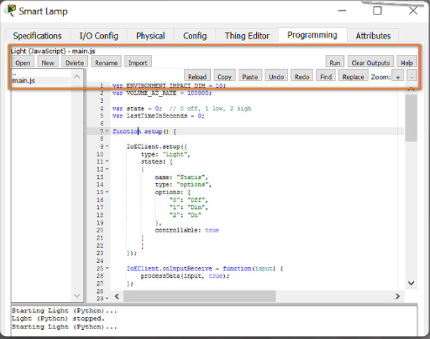

Introduction: Creating and Programming Objects in Packet Tracer.
In this chapter, you will learn:
- How to create a new Thing.
- How to connect your new Things to the network.
- How to use available scripts fot the new Thing.
- How to access the programming environment.
- How to review and modify existing scripts.
Creating and Connecting a Things.
Before attempting to create a new Thing, you need to decide what the Things will do, how it will connect to the network, and how it will work. You need to find graphics to represent the states of your new Thing.
Usually you will need two graphics, one to represent the biginning or default state and another to represent the end state. You also need to identify an existing Thing that functions in a similar manner as the new Thing.
The existing script can then be modified to create the new script.
Clicking on any IoT device that is in the workspace will reveal the specifications about that device. The specifications include:
- Usage - Things may connect to other IoT devices in order to receive LOW or HIGH inputs or it may read the variable set in the Environment object.
- Features - How the device works or what it does. Devices can generate high and low values based on a button being pushed or toggled on and off or they can detect certain environmental values (eg. Smoke or sunlight).
- Direct Control - Show you what keystrokes will allow you to physically interact with the Thing.
- Local and Remote Control - Shows how to control the Thing locally or remotely (if applicable).
- Data Specifications - How the values are produced or the port/slot used to connect to the sensor
- Example - Describes an example of how is it works.
- Click the Advanced tab/Thing Editor from within the existing object specifications page.
- Associate the new graphics to their respective states by clicking on a state and browsing to the location of the graphic on your local device. The images will be saved automatically.
- Click on the Config tab to select the network adaptor to be used to connect to the network (if applicable).
- Select Tools/Custom Device Dialog from the uppermost toolbar.
-
Within the Device Template Manager.
- Click on Select and click on the Thing to be saved.
- Modify the template and descrition as appropiate.
- Click on the type of new Thing.
- Click on Add - The new template will be saved in the PT template file on the local disk and the customized Thing will now display with the other sensors.
Packet Tracer - Create Your Own Thing.
Packet Tracer - Create Your Own Thing Instructions
Create Your Own Thing Packet Tracer File
The Programming Environment.
To be able to provide true IoT solutions, it is critical to have programming knowledge. Packet Tracer provides support for JavaScript, Phyton and Visual Blocky.
To enter the programming environment.
- Open an IoT device and click on the Advanced button.
- Select the Programming tab.
-
Select the script in the panel to the left and select Open.
 -
The selected programming script will appear in the right hand panel and may be edited as appropiate. You can use the editing buttons to make the script modification easier.
 - Once finished any required modifications, simply close the Programming tab and the changes will be saved.
Reviewing and Modifying Script.
Packet Tracer provides a large number of devices that can be modified to create new Things. It is often easier to modify an existing object that has similar functionality to the Thing being created that it is to program an entirely new Thing.
Packet Tracer - Modify existing script for and IoT Thing.
Modify Your Thing Instructions
Modify Your Thing Packet Tracer File
Chapter 8. Creating and Programming Objects in Packet Tracer.
At the completion of this chapter, you should be able to:
- Create a new Thing.
- Connect a Thing to the network.
- Use available scripts for a new Thing.
- Access the programming environment.
- Review and modify existing scripts.
Packet Tracer IoT Basic Quiz